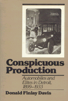

Davis demonstrates how decisions and ambitions in the social community fed into the economic community
Davis demonstrates how decisions and ambitions in the social community fed into the economic community


 Davis demonstrates how decisions and ambitions in the social community fed into the economic community
Davis demonstrates how decisions and ambitions in the social community fed into the economic community

|  |
Conspicuous ProductionAutomobiles and Elites in Detroit, 1899-1933Donald Finlay Daviscloth EAN: 978-0-87722-549-2 (ISBN: 0-87722-549-4) |
Wallace K. Ferguson Prize, the Canadian Historical Association, 1989
"Davis points out the enormous class diversity and conflict which characterized the first three decades of the Detroit auto industry...an important contribution to our understanding of Detroit in the twentiety century."
—-Journal of Economic History
With the founding of the American automotive industry in the 1890s, the social and economic community of Detroit was dramatically altered. In this first detailed examination of the relationship between the dominant industry and the social elite of Detroit, Donald Finlay Davis demonstrates how decisions and ambitions in one sphere fed into the other.
Detroit�s automotive industry was socially divided, roughly along the lines of its own price-class hierarchy, and Davis argues that these divisions influenced community decision-making. Bridging the gap between urban and business history, Conspicuous Production traces how the social aspirations of the �gasoline aristocracy� profoundly influenced the models and marketing decisions of these fledgling companies. The identification of social renegade Henry Ford with the low-and middle-income groups contributed to the Model T being scorned as a vehicle for the upwardly mobile. The Packard—"a gentlemen�s car built by gentlemen"—and other luxury manufactures such as Lincoln, Wayne, Lozier, and Northern were embraced by the social elite while the more pedestrian models dominated the market. The author sheds new light on the fate of Detroit�s old families; on the ascent of Ford, General Motors, and Chrysler; on Detroit�s transit policies; and on the Michigan bank crash that precipitated the closure of America�s banks in March 1933.
Illustrated with early advertisements and promotional photos of classic automobiles, Conspicuous Production traces the mutual influence of industrial and community leadership in early twentieth-century Detroit and asks: Who determined that American technology should serve the masses as well as the classes?
Donald Finlay Davis is Associate Professor of History at the University of Ottawa.
American Studies
Urban Studies
Technology and Urban Growth, edited by Blaine Brownell, Donald T. Critchlow, Mark S. Foster, Mark Rose, and Joel A. Tarr.
Technology and Urban Growth, edited by Blaine Brownell, Donald T. Critchlow, Mark S. Foster, Joel Tarr, and Mark Rose, focuses on the relationships between urban growth and change and developments in technological fields such as transport, utilities, and housing and office construction.
© 2015 Temple University. All Rights Reserved. This page: http://www.temple.edu/tempress/titles/409_reg.html.